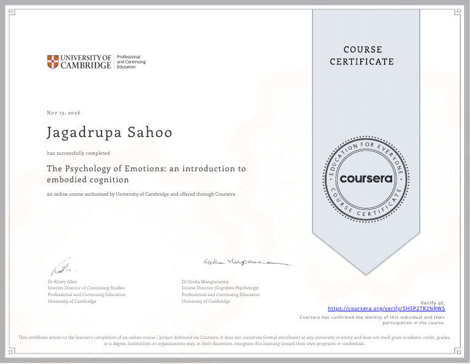

Psychology and cognition
The Psychology of Emotions: An Introduction to Embodied Cognition
University of Cambridge · 13 Nov 2026How emotions are felt, studied and recognised in other people.
PsychologyResearch MethodologiesResearchNon-Verbal Communication